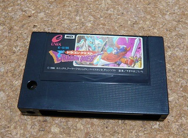
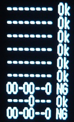
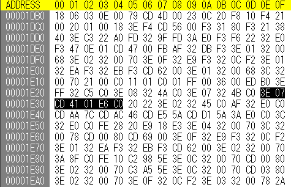
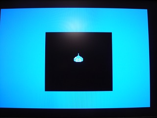

ドラゴンクエスト MSX版の裏技
MSX(1)版のドラゴンクエストIIには、「あぶないみずぎ」を入手すると、それを着たムーンブルクの王女の絵が表示されるという他機種版ではMSX2版でも出来ない裏技があるのはかなり有名な話で、ここで紹介するまでもありません。

MSX(1)版のドラゴンクエストにも、他機種版では出来ない裏技があり、一般的には下記のように言われています。
電源を入れたら、[TAB], [SHIFT], [CAPS], [SPACE], [→], [←], [↓]を同時に押して待つとモンスターのグラフィックを次々と表示するモードになる。
ところが、試して見るとFS-A1STやFS-A1GT、HB-F1XDでは出来ず、FS-A1FMではたまに出来る、HB-F500では出来る、というように確実では無いようです。そもそもMSXではキーの同時押しをどこまでサポートできているのでしょう。この裏技では7個のキーを同時に押さなくてはならず、押すのも大変ですが、そもそもMSX本体がきちんと認識できるのか、という問題があります。
一般的には「Nキーロールオーバー」という言葉で定義される仕様ですが、ここでは細かい説明は省きます。
では、実際MSXがどのようにキーを認識しているかFBE5h以降を確認してみると・・・こんな感じでした。しかも不安定でたまに結果が変わります。

簡単に説明すると、各行は0〜10行目のキーマトリクスに対応していて、行内の"-"はキーが押されていないこと、"O"はキーが押されていることを示します。裏技の情報通りキーを押すと、最後の3行は本来であれば下記のようになるはずで、OKとNGはその通りになっているかどうかを示しています。
----O--O
----O---
OO-O---O
確認結果では上の行と下の行が同じようになっており、正しく認識されていないようです。特に[SHIFT]を押すとおかしくなるようです。[SHIFT]は元々他のキーと合わせて押されることを前提としているのが原因なのかも知れません。裏技が出来る機種でも調べてみましたが、同様の傾向で、明確な違いはありませんでした。
仕方ないので、ROMを吸い出してキーマトリクスをスキャンしているところ(CALL 0141h)を片っ端からチェックしてみましたが、前述の列をすべてチェックしているところはありませんでした。唯一、7行目のみをチェックしている部分があり、1E2Eh付近でした。

命令語にすると以下の通り。
LD A, 07h
CALL 0141h
AND C0h
つまり、7行目のキーマトリクスの上位2ビットのみをチェックしていました。これが何にあたるかというと・・・[SELECT]と[RETURN]です。
ということは、起動時に[SELECT]と[RETURN]を押すだけで良い・・・？半信半疑ながらやってみると、見事にFS-A1STでもモンスターのグラフィックを表示することが出来ました。

沢山のキーを押したときに不安定になって、たまたま[SELECT]と[RETURN]を押されたと認識されることが誤情報の原因のようです。意外と雑誌とかの裏技も当てにならないものです・・・。
余談ですが、MSX(1)版のドラゴンクエストは発行元がエニックスで、販売元が小西六エニックスと書かれていますが、MSX2版のドラゴンクエストには販売元が書かれていないようです。よくよくケースを見てみると、エニックスの型番（E-G184）の上にHBJ-G061Cというソニーの型番が書かれています。この頃は作成元と販売元が異なることも多かったようです。流通の関係でしょうか。それにしてもMSX2版のみソニーが扱うというのは分かるような分からないような・・・。
この噂の検証に協力して下さったtyr105さんに感謝します！